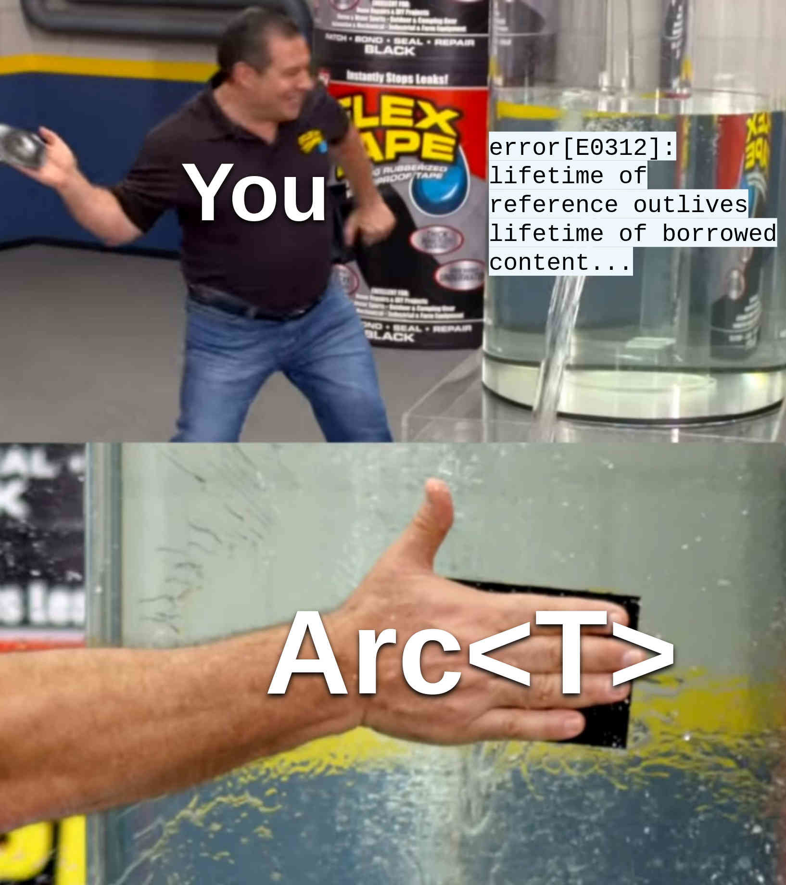

Functions that handle updates: First try
We are programming a blazing fast messenger bot to make
people’s lives easier. Using long polling or webhooks, we obtain a
stream of server updates, one-by-one. For all updates, we have a vector
of handlers, each of which accepts a reference to an update and returns
a future resolving to (). Dispatcher owns the
handler vector and on each incoming update, it executes the handlers
sequentially.
Let us try to implement this. We will omit the execution of handlers
and focus only on the push_handler function. First try (playground):
use futures::future::BoxFuture;
use std::future::Future;
#[derive(Debug)]
struct Update;
type Handler = Box<dyn for<'a> Fn(&'a Update) -> BoxFuture<'a, ()> + Send + Sync>;
struct Dispatcher(Vec<Handler>);
impl Dispatcher {
fn push_handler<'a, H, Fut>(&mut self, handler: H)
where
H: Fn(&'a Update) -> Fut + Send + Sync + 'a,
Fut: Future<Output = ()> + Send + 'a,
{
self.0.push(Box::new(move |upd| Box::pin(handler(upd))));
}
}
fn main() {
let mut dp = Dispatcher(vec![]);
dp.push_handler(|upd| async move {
println!("{:?}", upd);
});
}Here we represent each handler using a dynamically typed
Fn restricted by an HRTB lifetime
for<'a>, since we want a returning future to depend
on some 'a from the &'a Update function
parameter. Later, we define the Dispatcher type holding
Vec<Handler>. Inside push_handler, we
accept a statically typed, generic H returning
Fut; in order to push a value of this type to
self.0, we need to wrap handler into a new
boxed handler and transform the returning future to BoxFuture
from the futures crate using Box::pin.
Now let us see if the above solution works:
error[E0312]: lifetime of reference outlives lifetime of borrowed content...
--> src/main.rs:17:58
|
17 | self.0.push(Box::new(move |upd| Box::pin(handler(upd))));
| ^^^
|
note: ...the reference is valid for the lifetime `'a` as defined here...
--> src/main.rs:12:21
|
12 | fn push_handler<'a, H, Fut>(&mut self, handler: H)
| ^^
note: ...but the borrowed content is only valid for the anonymous lifetime #1 defined here
--> src/main.rs:17:30
|
17 | self.0.push(Box::new(move |upd| Box::pin(handler(upd))));
| ^^^^^^^^^^^^^^^^^^^^^^^^^^^^^^^^^Unfortunately, it does not work.
The reason is that push_handler accepts a
concrete lifetime 'a that we try to boil down to
an HRTB lifetime for<'a>. By doing so, we try to
prove that for<'a, 'b> 'a: 'b (with 'b
being 'a from push_handler), which obviously
does not hold.
We can try to approach this differently: instead of the
Fut generic, we can force a user handler to return
BoxFuture bounded by for<'a> (playground):
use futures::future::BoxFuture;
#[derive(Debug)]
struct Update;
type Handler = Box<dyn for<'a> Fn(&'a Update) -> BoxFuture<'a, ()> + Send + Sync>;
struct Dispatcher(Vec<Handler>);
impl Dispatcher {
fn push_handler<H>(&mut self, handler: H)
where
H: for<'a> Fn(&'a Update) -> BoxFuture<'a, ()> + Send + Sync + 'static,
{
self.0.push(Box::new(move |upd| Box::pin(handler(upd))));
}
}
fn main() {
let mut dp = Dispatcher(vec![]);
dp.push_handler(|upd| {
Box::pin(async move {
println!("{:?}", upd);
})
});
}It compiles fine now but the final API is defected: ideally, we do
not want a user to wrap each handler with Box::pin. After
all, this is one of the reasons why push_handler exists: it
transforms a statically typed handler into its functionally equivalent
counterpart in the dynamic type space. But what if we force handlers to
remain static?
We can accomplish it using heterogenous lists.
Second try: Heterogenous list
A heterogenous list is indeed just a fancy name for a tuple. Thus, we
want something like (H1, H2, H3, ...), where each
H is a different handler type. But at the same time, the
push_handler and execute operations require us
to be able to iterate on this tuple – a possibility that is missing in
vanilla Rust. It does not mean, though, that we cannot express a similar
thing via some freaky type machinery!
First of all, this is the representation of our heterogenous list (playground):
If you think this is a bit senseless, you are not far from true. All
we want is to be able to construct types like
Dispatcher<H1, Dispatcher<H2, Dispatcher<H3, DispatcherEnd>>>,
an equivalent form of the (H1, H2, H3) tuple. With this in
mind, we can now define the push_handler function using
simple type-level induction:
trait PushHandler<NewH> {
type Out;
fn push_handler(self, handler: NewH) -> Self::Out;
}
impl<NewH> PushHandler<NewH> for DispatcherEnd {
type Out = Dispatcher<NewH, DispatcherEnd>;
fn push_handler(self, handler: NewH) -> Self::Out {
Dispatcher {
handler,
tail: DispatcherEnd,
}
}
}
impl<H, Tail, NewH> PushHandler<NewH> for Dispatcher<H, Tail>
where
Tail: PushHandler<NewH>,
{
type Out = Dispatcher<H, <Tail as PushHandler<NewH>>::Out>;
fn push_handler(self, handler: NewH) -> Self::Out {
Dispatcher {
handler: self.handler,
tail: self.tail.push_handler(handler),
}
}
}If you are new to type-level induction, you can think of it as of regular recursion, but applied to types (traits) instead of values:
- The base case is
impl<NewH> PushHandler<NewH> for DispatcherEnd. Here we construct a dispatcher with only one handler. - The step case is
impl<H, Tail, NewH> PushHandler<NewH> for Dispatcher<H, Tail>. Here we only propagate our induction toself.tail.
We implement execute in the same way:
trait Execute<'a> {
#[must_use]
fn execute(&'a self, upd: &'a Update) -> BoxFuture<'a, ()>;
}
impl<'a> Execute<'a> for DispatcherEnd {
fn execute(&'a self, _upd: &'a Update) -> BoxFuture<'a, ()> {
Box::pin(async {})
}
}
impl<'a, H, Fut, Tail> Execute<'a> for Dispatcher<H, Tail>
where
H: Fn(&'a Update) -> Fut + Send + Sync + 'a,
Fut: Future<Output = ()> + Send + 'a,
Tail: Execute<'a> + Send + Sync + 'a,
{
fn execute(&'a self, upd: &'a Update) -> BoxFuture<'a, ()> {
Box::pin(async move {
(self.handler)(upd).await;
self.tail.execute(upd).await;
})
}
}But that is not all we need. The final move is to abstract
execute for all lifetimes of updates, since our
implementation of Execute<'a> relies on some concrete
'a, whereas we want our dispatcher to handle updates of
variying lifetimes:
async fn execute<Dp>(dp: Dp, upd: Update)
where
Dp: for<'a> Execute<'a>,
{
dp.execute(&upd).await;
}Fine, now we are ready to test our bizzare solution:
#[tokio::main]
async fn main() {
let dp = DispatcherEnd;
let dp = dp.push_handler(|upd| async move {
println!("{:?}", upd);
});
execute(dp, Update).await;
}But it does not work either:
error: implementation of `Execute` is not general enough
--> src/main.rs:83:5
|
83 | execute(dp, Update).await;
| ^^^^^^^ implementation of `Execute` is not general enough
|
= note: `Dispatcher<[closure@src/main.rs:80:30: 82:6], DispatcherEnd>` must implement `Execute<'0>`, for any lifetime `'0`...
= note: ...but it actually implements `Execute<'1>`, for some specific lifetime `'1`Still think that programming with borrow checker is easy and
everybody can do it after some practice? Unfortunately, no matter how
much practice you have, you cannot cause the above code to compile. The
reason is this: the closure passed to dp.push_handler
accepts upd of a concrete lifetime
'1, but execute requires Dp to
implement Execute<'0> for any lifetime
'0, due to the HRTB bound introduced in the
where clause. However, if you try your luck with regular
functions, the code will compile:
#[tokio::main]
async fn main() {
let dp = DispatcherEnd;
async fn dbg_update(upd: &Update) {
println!("{:?}", upd);
}
let dp = dp.push_handler(dbg_update);
execute(dp, Update).await;
}This will print Update to the standard output.
This particular behaviour of borrow checker may seem irrational –
and, in fact, it is; functions and closures differ not only in their
respective traits but also in how they handle lifetimes. While closures
that accept references are bounded by specific lifetimes,
functions such as our dbg_update accept
&'a Update for all lifetimes 'a.
This divergence is demonstrated by the following example code (playground):
let dbg_update = |upd| {
println!("{:?}", upd);
};
{
let upd = Update;
dbg_update(&upd);
}
{
let upd = Update;
dbg_update(&upd);
}Due to calls to dbg_update, we obtain the following
compilation error:
error[E0597]: `upd` does not live long enough
--> src/main.rs:11:20
|
11 | dbg_update(&upd);
| ^^^^ borrowed value does not live long enough
12 | }
| - `upd` dropped here while still borrowed
...
16 | dbg_update(&upd);
| ---------- borrow later used hereThis is because the dbg_update closure can handly only
one specific lifetime, whereas the lifetimes of the first and the second
upd are clearly different.
In contrast, dbg_update as a function works perfectly in
this scenario (playground):
fn dbg_update_fn(upd: &Update) {
println!("{:?}", upd);
}
{
let upd = Update;
dbg_update_fn(&upd);
}
{
let upd = Update;
dbg_update_fn(&upd);
}We can even trace the exact signature of this function using the
handy let () = ...; idiom (playground):
The signature is for<'r> fn(&'r Update), as
expected:
error[E0308]: mismatched types
--> src/main.rs:9:9
|
9 | let () = dbg_update_fn;
| ^^ ------------- this expression has type `for<'r> fn(&'r Update) {dbg_update_fn}`
| |
| expected fn item, found `()`
|
= note: expected fn item `for<'r> fn(&'r Update) {dbg_update_fn}`
found unit type `()`That being said, this solution with a heterogenous list is not what we want either: it is quite flummoxing, boilerplate, hacky, and does not work with closures at all. Also, I do not recommend going too far with complex type mechanics in Rust; if you suddenly encounter a type check failure somewhere near the dispatcher type, I wish you good luck. Imagine that you are maintaining a production system written in Rust and you need to fix some critical bug as quickly as possible. You introduce the necessary changes to your codebase and then see the following compilation output:
error[E0308]: mismatched types
--> src/main.rs:123:9
|
123 | let () = dp;
| ^^ -- this expression has type `Dispatcher<for<'_> fn(&Update) -> impl futures::Future<Output = ()> {dbg_update0}, Dispatcher<for<'_> fn(&Update) -> impl futures::Future<Output = ()> {dbg_update1}, Dispatcher<for<'_> fn(&Update) -> impl futures::Future<Output = ()> {dbg_update2}, Dispatcher<for<'_> fn(&Update) -> impl futures::Future<Output = ()> {dbg_update3}, Dispatcher<for<'_> fn(&Update) -> impl futures::Future<Output = ()> {dbg_update4}, Dispatcher<for<'_> fn(&Update) -> impl futures::Future<Output = ()> {dbg_update5}, Dispatcher<for<'_> fn(&Update) -> impl futures::Future<Output = ()> {dbg_update6}, Dispatcher<for<'_> fn(&Update) -> impl futures::Future<Output = ()> {dbg_update7}, Dispatcher<for<'_> fn(&Update) -> impl futures::Future<Output = ()> {dbg_update8}, Dispatcher<for<'_> fn(&Update) -> impl futures::Future<Output = ()> {dbg_update9}, DispatcherEnd>>>>>>>>>>`
| |
| expected struct `Dispatcher`, found `()`
|
= note: expected struct `Dispatcher<for<'_> fn(&Update) -> impl futures::Future<Output = ()> {dbg_update0}, Dispatcher<for<'_> fn(&Update) -> impl futures::Future<Output = ()> {dbg_update1}, Dispatcher<for<'_> fn(&Update) -> impl futures::Future<Output = ()> {dbg_update2}, Dispatcher<for<'_> fn(&Update) -> impl futures::Future<Output = ()> {dbg_update3}, Dispatcher<for<'_> fn(&Update) -> impl futures::Future<Output = ()> {dbg_update4}, Dispatcher<for<'_> fn(&Update) -> impl futures::Future<Output = ()> {dbg_update5}, Dispatcher<for<'_> fn(&Update) -> impl futures::Future<Output = ()> {dbg_update6}, Dispatcher<for<'_> fn(&Update) -> impl futures::Future<Output = ()> {dbg_update7}, Dispatcher<for<'_> fn(&Update) -> impl futures::Future<Output = ()> {dbg_update8}, Dispatcher<for<'_> fn(&Update) -> impl futures::Future<Output = ()> {dbg_update9}, DispatcherEnd>>>>>>>>>>`
found unit type `()`(In a real-world scenario, the above error would probably be 20x bigger.)
Third try: Using Arc

When I was novice in Rust, I used to think that references are
simpler than smart pointers. Now I am using
Rc/Arc almost everywhere where using lifetimes
causes too much pain and performance is not a big deal. Believe or not,
all of the aforementioned problems were caused by that single lifetime
in type Handler, 'a.
Let us just replace it with Arc<Update> (playground):
use futures::future::BoxFuture;
use std::future::Future;
use std::sync::Arc;
#[derive(Debug)]
struct Update;
type Handler = Box<dyn Fn(Arc<Update>) -> BoxFuture<'static, ()> + Send + Sync>;
struct Dispatcher(Vec<Handler>);
impl Dispatcher {
fn push_handler<H, Fut>(&mut self, handler: H)
where
H: Fn(Arc<Update>) -> Fut + Send + Sync + 'static,
Fut: Future<Output = ()> + Send + 'static,
{
self.0.push(Box::new(move |upd| Box::pin(handler(upd))));
}
}
fn main() {
let mut dp = Dispatcher(vec![]);
dp.push_handler(|upd| async move {
println!("{:?}", upd);
});
}Hell yeah, it compiles! We even do not need to manually specify
Arc<Update> in each closure – type inference will do
the dirty work for us.
The problem with Rust
“Fearless concurrency” – a formally correct but nonetheless misleading statement. Yes, you no longer have fear of data races, but you have PAIN, much pain.
Let me elaborate. In the previous sections, I have not even loaded
you with all the peculiarities and inadequacies of Rust that affected
the final solution – but there were plenty of them. First of all, notice
the heavy use of boxed futures: all of the aforementioned
BoxFuture types, as well as the corresponding
Box::new and Box::pin twiddling, were
irreplaceable by generics. If you know at least a little bit of Rust,
you know that Vec can only contain fixed-sized types, so
the occurrence of BoxFuture inside
type Handler makes sense; however, using
BoxFuture instead of an async function
signature in the Execute trait is not that apparent.
The awesome essay “Why
async fn in traits are hard” by Niko Matsakis explains why.
In short, at the moment of writing this blog post, it is impossible to
define async fn functions in traits; instead you should use
some type erasure alternative like the async-trait
crate or boxing futures manually, as in our examples. In fact,
async-trait performs quite a similar thing, but honestly I
avoid using it because it mangles compile-time errors with procedural
macros. The technique of returning BoxFuture also has
disadvantages – one of them is that you need not forget to specify
#[must_use] for each async fn,
otherwise the compiler would not warn you if you call
execute without .awaiting it 1. In
essence, boxing static entities is so common that the
futures crate exposes other dynamic variants of common
traits, including BoxStream,
LocalBoxFuture,
and LocalBoxStream
(the last two come without the Send requirement).
Secondly, explicit type annotation for upd breaks
everything (playground):
use tokio; // 1.18.2
#[derive(Debug)]
struct Update;
#[tokio::main]
async fn main() {
let closure = |upd: &Update| async move {
println!("{:?}", upd);
};
closure(&Update).await;
}Compiler output:
error: lifetime may not live long enough
--> src/main.rs:8:34
|
8 | let closure = |upd: &Update| async move {
| _________________________-______-_^
| | | |
| | | return type of closure `impl Future<Output = ()>` contains a lifetime `'2`
| | let's call the lifetime of this reference `'1`
9 | | println!("{:?}", upd);
10 | | };
| |_____^ returning this value requires that `'1` must outlive `'2`(Try to remove the type annotation : &Update and the
compilation will succeed.)
If you have no idea what this error means, you are not alone – see issue #70791.
Looking at the list of issue labels reveals C-Bug, which
classifies the issue as a compiler bug. At the moment of writing this
post, rustc has 3,107
open C-bug issues and 114
open C-bug+A-lifetimes issues. Remember
that async fn worked for us but an equivalent closure did
not? – this is also a compiler bug, see issue #70263.
There are also many language-related issues dated earlier than 2020, see
issue
#41078 and issue
#42940.
You see how our simple task of registering handlers has seamlessly
transcended into wandering in rustc issues with the hope to somehow
circumvent the language. Designing interfaces in Rust is like walking
through a minefield: in order to succeed, you need to balance on your
ideal interface and what features are available to you. Yes, I hear you.
No, it is not like in all other languages. When you program in some
stable production language (not Rust), you can typically foresee how
your imaginary interface would fit with language semantics; but when you
program in Rust, the process of designing APIs is affected by numerous
arbitrary language limitations like those we have seen so far. You
expect that borrow checker will validate your references and type system
will help you to deal with program entities, but you end up throwing
Box, Pin, and Arc here and there
and fighting with type system inexpressiveness.
To finish the section, this is the full implementation in Golang:
dispatcher.go
package main
import "fmt"
type Update struct{}
type Handler func(*Update)
type Dispatcher struct {
handlers []Handler
}
func (dp *Dispatcher) pushHandler(handler Handler) {
dp.handlers = append(dp.handlers, handler)
}
func main() {
dp := Dispatcher{handlers: nil}
dp.pushHandler(func(upd *Update) {
fmt.Println(upd)
})
}Why Rust is so hard?
Sometimes it is helpful to understand why shit happens. “Because X is bad” is not an answer; “Because people that made X are bad” is not an explanation either.
So why Rust is so hard?
Rust is a systems language. To be a systems PL, it
is very important not to hide underlying computer memory management from
a programmer. For this reason, Rust pushes programmers to expose many
details that would be otherwise hidden in more high-level languages.
Examples: pointers, references and associated stuff, memory allocators,
different string types, different
Fn traits, std::pin,
et cetera.
Rust is a static language. This is better explained
in my previous essay “Why Static
Languages Suffer From Complexity”. To restate, languages with
static type systems (or equivalent functionality) tend to duplicate
their features on their static and dynamic levels,
thereby introducing statics-dynamics biformity. Transforming a
static abstraction into its dynamic counterpart is called
upcasting; the inverse process is called downcasting.
Inside push_handler, we have used upcasting to turn a
static handler into the dynamic Handler type to be pushed
to the final vector.
In addition, Rust is committed to making all these things intuitive and memory safe. This kick-ass combination stresses the human bounds of computer language design. From now it should be completely understandable why Rust feels like a full of holes from time to time; in fact, it is almost a miracle that it is functioning at all. A computer language is like a system of tightly intertwined components: every time you introduce a new linguistic abstraction, you have to make sure that it plays well with the rest of the system to avoid bugs and inconsistencies. Perhaps we should grant free health insurance or other life benefits to those who develop such languages on full-time.
How things can be different?
Now imagine that all of Rust’s issues dissapear. Also, whole rustc and std are formally verified. It would be also fairly nice to have a complete language specification with multiple tier-1 implementations, the same support for hardware platforms as of GCC, stable ABI (though it is unclear how to deal with generics), and similar stuff. That would probably be an ideal language for systems programming.
Or imagine that Rust’s issues dissapear and it is now
completely high-level. That would kick the shit out of all
mainstream programming languages. Rust has adequate defaults, it
supports polymorphism, it has a very convenient package manager. I will
not enumerate here all the faults of mainstream PLs: cursed JavaScript
semantics, enterprise monstrosity of Java, NULL pointer
problems in C, uncontrollable UB of C++, numerous ways of doing the same
job in C#, et cetera. The modern programming language scene is rather a
freak show. Yet, you see, even with all of these drawbacks, people write
working software, while Rust (in its current state) is far from being
the most used PL. Moreover, my prediction is that Rust will never be as
popular as Java or Python. The reason is more social than technical: due
to the innate complexity of the language, there will always be fewer
professional software engineers in Rust than in Java or Python; to make
matters even worse, they will require higher salaries, mind you. As an
employer, you will have much more trouble finding good Rustaceans for
your business.
Finally, imagine that Rust’s issues dissapear, it is high-level, and has uniform feature set. That would presumably be close to the theoretical ideal of a high-level, general-purpose programming language for the masses. Funnily enough, designing such a language might turn out to be a less intimidating task than original Rust, since we can hide all low-level details under an impenetrable shell of a language runtime.
Waiting for better future
So if I “figured out it all”, why should not I develop a sublime version of Rust? I do not want to spend my next twenty years trying to do so, given that the chance that my language will stand out is infinitely small. I think the current set of most used production languages is pretty random to some extent – we can always say why a specific language got popular, but generally we cannot explain why better alternatives sunk into oblivion. Backing from a big corporation? Accidentally targeting an IT trend of the future? Again, the reasons are rather social. Harsh reality: in life, sometimes hope plays a much more vital role than all of your skills and self-dedication.
If you still want to create a PL of the future, I wish you good luck and strong mental health. You are endlessly courageous and hopelessly romantic.
Related ideas
- “Garbage Collection Makes Rust Easier to Use: A Randomized Controlled Trial of the Bronze Garbage Collector”
- “Shifgrethor I: Garbage collection as a Rust library”
- “Revisiting a ‘smaller Rust’”
- “The Rust I Wanted Had No Future”
- “Dada, an Experiement by the Creators of Rust”
Feel free to contact me if you wish to extend this list.
Update: Addressing misinterpretations
Since publication, this post has gained 500+ upvotes on r/rust and 700+ comments on HN. I did not expect such amount of attention. Unfortunately, before publishing anything, it is very hard to predict all possible misinterpretations.
Some people pointed out that the dispatcher example was concerned with the problems of library maintainers, and that application programmers usually do not have to deal with such peculiarities. They are right to some extent; however, the reason I wrote this essay was mainly to talk about programming language design.
Rust is ill-suited for generic async programming, this
is the gross true. When you enter async, you observe that
many other language features suddenly break down: references, closures,
type system, to name a few. From the perspective of language design,
this manifests a failure to design an orthogonal language 2. I
wanted to convey this observation in my post; I should have stated this
explicitly.
Additionally, how we write libraries reveals the true potential of a language, since libraries tend to require more expressive features from language designers – due to their generic nature. This also affects mundane application programming: the more elegant libraries you have, the more easily you can solve your tasks. Example: the abscence of GATs does not allow you to have a generic runtime interface and change Tokio to something else in one line of code, as we do for loggers.
One gentleman also outlined a more
comprehensive list of async Rust failures, including
function colouring, asynchronous Drop, and library code
duplication. I did not try to address all of these issues here –
otherwise the text would be bloated with too much information. However,
the list pretty much sums up all the bad things you have to deal with in
generic async code, such as library development.
Actually I forgot this
#[must_use]while writing the example and then did not understand for a while whystdoutwas clean in the case of two or more chained handlers. 🤡↩︎A language is orthogonal when its features “play well” with each other. E.g., arrays as function parameters in C just boil down to pointers, which is admittedly not orthogonal.↩︎